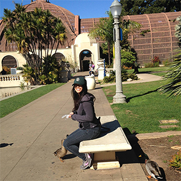

ANNAMARIE | DESIGNER
 Annamarie was born in the San Francisco Bay Area but grew up in San Diego California. She studied art, design and technology at San Diego State University and holds a BA in Multimedia. During her training at SDSU, she explored different mediums such as photography, oil/ acrylic painting, ceramics, 3-D modelling, architecture, graphic/ web design. After she graduated, Annamarie worked as a freelancer doing projects for multiple businesses and organizations. At one point she was on her way to become a nurse. After being a caregiver working for the elderly and disabled at a homecare agency for a couple years she realized that design was her real passion. In 2021, she moved to San Francisco to pursue a MA degree in Product Design Specialized in Interaction UX/UI Design at the Academy of Art University. Annamarie's graces and passion for beauty is never ending which is why she continues to be driven towards creativity and perfect communication.